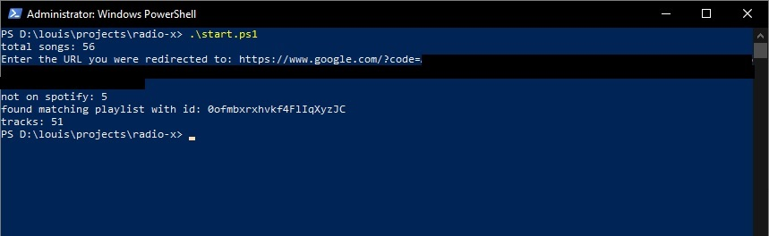

Radio X Web Scraper 📻
A web scraper that generates a Spotify playlist based on last played songs on Radio X.
Github can be found here: https://github.com/Rossy167/radio-x
Overview
So, I have a fairly long commute… and over the course of these commutes I noticed I was listening to the same 5 songs over and over. So I switched to the radio, Radio X to be specific. I loved its music choice, but thanks to how money works, I’d traded out listening to the same 5 songs repeat to listening to the same 5 ads on repeat. I swear, radio stations have about 20 minutes of ads for every 2 minutes of song, it’s absurd.
I thought it’d be fun to hack together a little piece of software that uses the last played songs on Radio X to create a constantly rolling playlist, avoiding the curse of ads, and the curse of stale music taste. I checked their site, and yep, they do indeed (for now) have a webpage that shows what they’ve been playing.
How it works
This project allows you to create a Spotify playlist from a static HTML page at a fixed web address. It requests the HTML, parses it into something readable and then makes calls to the Spotify API to generate a playlist. The code itself only needs one command to run (since it was designed to be automated) but on first time setup it will require a Spotify login via oauth to create the .cache file it uses to authenticate.
Once this command is run (the start file is either a .ps1 or a .sh but it can also be ran manually, then the playlist in spotify will be created. If there is a playlist with the name Radio X (Code Generated) already then the script will overwrite that playlist instead. An example of a playlist generated can be seen below.
My use case
I wrote this script (application? program? the lines are blurred at this point) so that I could have a rolling playlist for when I drive. As such I didn't really want to have to run it manually on a regular basis, seems like a waste of time... plus making random API calls from my work PC didn't seem smart. So I opted to make this a cron job on my Raspberry Pi (which does a few other things) and now I have a playlist on Spotify that updates ever 4 hours, which is the normal length of time of a Radio X host's session.
The cron command looked a little bit like this:
0 */4 * * * $HOME/radio-x start.sh